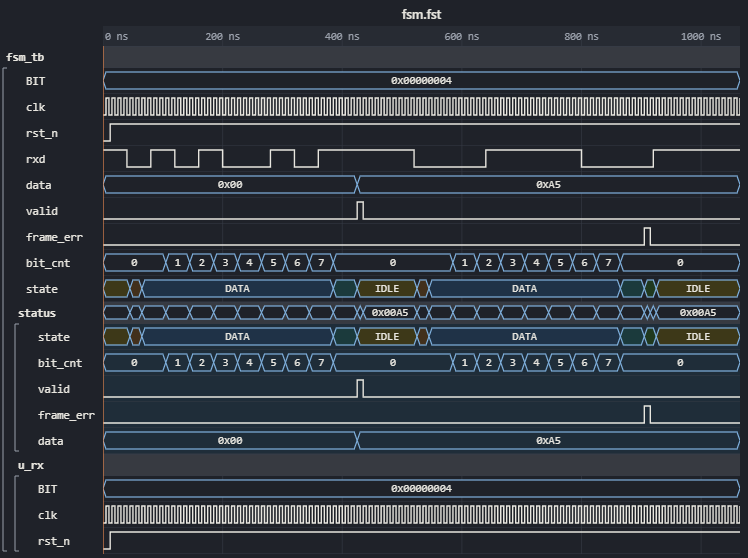

VS Code
The dumps are on a Linux machine — a build server over Remote-SSH, or WSL on your laptop — and VS Code is on yours.
The WaveLens extension opens a .vcd or .fst of that machine in a tab with the viewer: right click,
Open in WaveLens. Nothing else to install on the host, no port to forward.
Where what runs
Your machine (Windows, macOS, Linux)
- the VS Code window
- the tab: the viewer draws the waves here
- your clipboard, VS Code's theme and keys
remote channel
⇄
The Linux host (Remote-SSH / WSL)
- the extension (a workspace extension) and the static
svait carries - the dumps, the simulator, your files
- an agent's
tools/wavemcp.py, if you use one
The extension reads the dump on the host and sends the tab its VCD text (an FST is turned into VCD text by the bundled
sva first, kept in the extension's storage: 16 at most, besides the ones open and the ones of the last ten minutes). Saving and picking files happen on the host too. It runs in
VS Code's own node: no Python, no GTKWave, no Rust needed there.
Installing
- The package comes with a clone:
bin/wavelens.vsix, the build of the version. To pack the tree as it is now (no node, no npm):make vsix→out/wavelens.vsix(the last build) and its copyout/wavelens-<version>.vsix(the versions kept side by side: install another one to compare). It is for a Linux x86-64 host; VS Code 1.80 or newer. - Connect VS Code to the host (Remote-SSH: Connect to Host…, or WSL: Connect to WSL) and open the folder of your dumps.
- In a terminal of that remote window:
code --install-extension bin/wavelens.vsix --force(--force: over an older version; or Extensions → … → Install from VSIX… while connected), then Developer: Reload Window. The Extensions view then lists WaveLens under the host's name (SSH: … / WSL: …), not under Local.
Without make: python3 -I tools/mkvsix.py writes the same package. The extension of before the rename
to WaveLens goes with code --uninstall-extension wavefw.wavefw.
Installed in a local window instead, the extension cannot see the host's files. If the right click on a
.vcd has no Open in WaveLens, check that it is installed on the host.
Opening a dump
In the Explorer, right click a .vcd or .fst → Open in WaveLens, or
Open With… → WaveLens, where you can also make it the default editor for these files. The tab is the same
viewer as a page in a browser: the bar, the find, the Modules panel, the assertions, the bus transactions, the compare.

fsm.fst (make examples) opened over WSL: the
states by name from the FST's enum tables, the packed struct status as its fields. The picture is the tab's own
(make vscode-e2e takes it in a real VS Code).What the tab does differently
| In a VS Code tab | |
|---|---|
| a large dump | an FST of 4 MB or a VCD of 64 MB and more (wavelens.lazy) opens with every module
and signal at once, the top level open and its modules folded, no value read yet; open a module and the signals on the screen
are read from the dump's FST (sva vcd --codes; a VCD is made an FST once). Assertions, the FSM panel and pictures
read what they need first. |
| a new simulation | the tab sees the dump change on the disk (polled: an NFS home works too) and offers
⟳ in the bar, or WaveLens: Read the dump again in the editor's title; the view is kept.
wavelens.autoReload: true reads it at once. |
| files | Save, PNG / SVG / WaveDrom and the assertions' report ask where to save on the
host; Load…, the .sv files and Compare… pick there (an FST to
compare is converted too); Open… a dump opens a tab of its own. |
| the runs kept | Runs… (g u, WaveLens: The runs kept of this dump):
keep the dump of now with a name, tags and a comment (an FST in .wavelens-runs beside it), and compare with one
run, or all of them, over the waves in sight or a span of yours — only that window of a run is read, on the host
(Compare two runs). |
| the last state | the state loaded last is the workspace's, whichever dump it was: Load… opens on that file, Reload (r) reads it in every tab, and a dump seen for the first time takes it at once (ctrl+Z undoes it); a dump with a view of its own keeps it. |
| what you did | bookmarks, groups, colours, radix, hidden rows and the assertion bindings are kept per dump in the workspace: they survive closing the tab and VS Code. |
| theme and keys | wavelens.theme: the viewer's light or dark by VS Code's (auto), the
colours of VS Code's own theme (vscode), or always light, white or dark;
◐ in the viewer's bar (or WaveLens: Choose the theme of the waves in the editor's title) shows each on the open
tabs as you move through the list. The viewer's keys (?) work in the tab and do not reach VS Code: the plain ones,
and ctrl+F ctrl+C ctrl+Z alt+C W R, which mean what they mean in VS Code.
wavelens.keysToVSCode (default ctrl+G, Go to Line) go to VS Code — the viewer's list of your groups is
gl then; ctrl+P, F1, ctrl+Tab stay VS Code's. |
| version | the bar's title line says the version and the extension's branch and commit (0.35 ·
dev@d502c48*, *: changes not committed): a development build says which one it is. |
| types by Verilator | WaveLens: Make the types with Verilator (FSM states, structs) (the editor's title menu) asks for the design
(a .f file of the workspace, or the arguments: * and ? in a file's name are expanded) and the top module (the dump's by default), runs
verilator --json-only in the workspace's folder and writes tb.types.json beside the dump: the tab reads
it at once (FSM states by name, struct fields; Types). No Python needed; wavelens.verilator. |
| convert to FST | WaveLens: Convert to FST (beside the VCD, FSM states kept) (a right click on a .vcd in the Explorer, the tab's
title menu, or the palette with such a tab active) writes tb.fst beside tb.vcd with the bundled sva fst: the
enum tables of the VCD and the FSM states of tb.types.json become the FST's own, so GTKWave or Surfer name the
states too. The notes go to the log with their lines (five of a kind, then their count); a failure opens the log and
leaves an older tb.fst as it was. |
| state names | a VCD has no enum names (Questa writes none, its int-based enums come as integer,
shown in decimal). The design's types next to the dump (tb.types.json by tb.vcd: from Questa
or Verilator, State names) name every state bus and struct by its path, read at each read and
when the file is written. Without them the tab reads the workspace's SystemVerilog sources
(wavelens.sources) and names the state buses declared with a typedef enum there, the fields of a typedef struct packed too, by the variable's
name. Sources… in the bar picks other files. |
| the log | each read writes the dump's parameters (size, $version, $timescale, its time,
scopes, signals, value changes) and what the reader noticed to the output channel WaveLens, a note as
path:line: warning: …; the same notes stand in the Problems panel (ctrl+shift+M) on their lines
(a click opens the dump there) until the tab closes. A dump it cannot read is an error there, with a message that opens the
line. WaveLens: Show the log in the editor's title. |
| a big dump | read whole (wavelens.lazy never, or under its sizes), the cut of dumpBudget applies; the whole VCD text crosses to your machine once per
read. |
Links from a log
A time in the terminal, a .log / .txt / .out file or a task's output is a link (ctrl+click): @ 1234 ns,
at 1.2 us, time=5ns, a bare 1234 ns. The dump's WaveLens tab — the one in sight, else the one used last, else a dump
opened in this workspace before, picked — puts the cursor there and selects the first a.b.c signal of the line. Copy link
in the tab (yl, # of a bookmark) gives dump.vcd#t=60ns&sel=PSEL, a link to that dump in a log or a note (the links run WaveLens: Go to a moment of the dump).
wavelens.logLinks adds patterns of your own (the groups t, unit, sig):
\[(?<t>\d+)(?<unit>ns)\] (?<sig>\S+) for [1234ns] tb.u.req.
Your configuration of the viewer
WaveLens: Open the configuration (⚙ in the tab's title, or the command palette) opens your configuration of the viewer beside the
tab: a file of the extension (wavelens.config.jsonc in its global storage: every window and workspace of this host), made the
first time of the viewer's defaults — every key of wavelens.config.js with its value and its comment: colours
(colors, enumColors, groupColors), sizes (rowHeight, nameWidth, fontSize …),
the radix, the edges' style, the sort, your keys (keys) and the rest. Change a value and save: it is checked and applied at once
to every open tab, and to every tab opened after.
- Not JSON (a comma missing): marked at its line, nothing applied — the tabs keep the last configuration that read.
- A value of the wrong kind (
"rowHeight": "30"), a key that is no setting,themeorkeysLeft(VS Code's here:wavelens.theme,wavelens.keysToVSCode): marked on its line (the Problems panel), left out; the rest applies. A key takes every kind its comment names:"log": false,"keyHints": false,"gapIdle": "2us". - A key taken out of the file: its default again. Comments (
//,/* */) and a comma before}are fine. - One that breaks the viewer anyway: the tab goes back to the defaults (VS Code's theme and keys kept, your colours gone) and says so (Open or Reset).
- WaveLens: Reset the configuration to the defaults writes the file anew (asked first) and applies it.
With an AI agent on the host
An agent working on the host with the MCP server (tools/wavemcp.py, see AI agents) can show a
person what it found in the tab they have open. When it starts its live link (view_live), every open tab connects
(● live in the bar). view_live with page a dump's path and open: true opens it in the
VS Code window whose folders hold the file; view_edit and view_get with that page work on its
tab — bookmarks with explanations, arrows, groups appear as the agent puts them. The extension relays the link (the tab cannot reach
the host's 127.0.0.1 itself); nothing is forwarded.
Settings and troubleshooting
| Setting | Default | Does |
|---|---|---|
wavelens.theme | auto | the theme of the waves: auto (by VS Code's light / dark),
vscode (VS Code's colours), light, white, dark |
wavelens.sources | **/*.sv, **/*.svh | the workspace's SystemVerilog
sources whose typedef enum names a VCD's state buses when there is no tb.types.json by the dump
(empty: none) |
wavelens.keysToVSCode | ["ctrl+G"] | the viewer's keys left to VS Code
(ctrl+G: Go to Line; the list of your groups is gl then) |
wavelens.verilator | verilator | the Verilator 5 of Make the types with Verilator, on the extension's host |
wavelens.logLinks | [] | more patterns of a time in a log or the terminal (regular expressions
with the groups t, unit, sig): links to the dump's tab, below |
wavelens.autoReload | false | after a new simulation: read the dump at once (false: offer ⟳) |
wavelens.openLastState | true | a dump seen for the first time takes the state loaded last (false: only Reload offers it) |
wavelens.lazy | auto | a large dump read as it is needed (auto: an FST of 4 MB, a VCD of 64 MB
and more; always; never: read whole, cut to dumpBudget) |
wavelens.live | true | the tabs connect to an agent's live link (false: they do not); WaveLens: Connect to the agent connects the tab now |
wavelens.runsDir | where the Runs panel keeps the runs (empty: .wavelens-runs beside the
dump; relative to the workspace folder, or absolute: one directory for every dump) | |
wavelens.sva | another sva program than the one the extension carries |
The output channel WaveLens (View → Output, or WaveLens: Show the log) logs each read and what went wrong: a
dump that could not be read (with its line, also in the Problems panel), an FST the sva could not convert, the live link. A host that is not Linux x86-64 needs wavelens.sva pointing at a
sva built there (make sva-build).